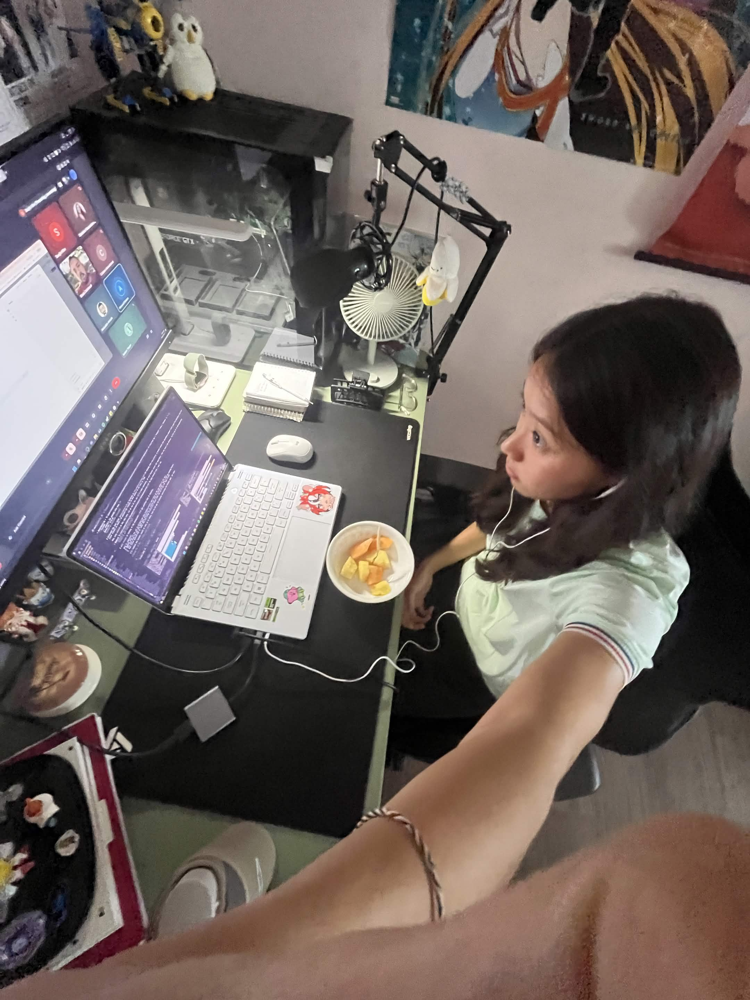
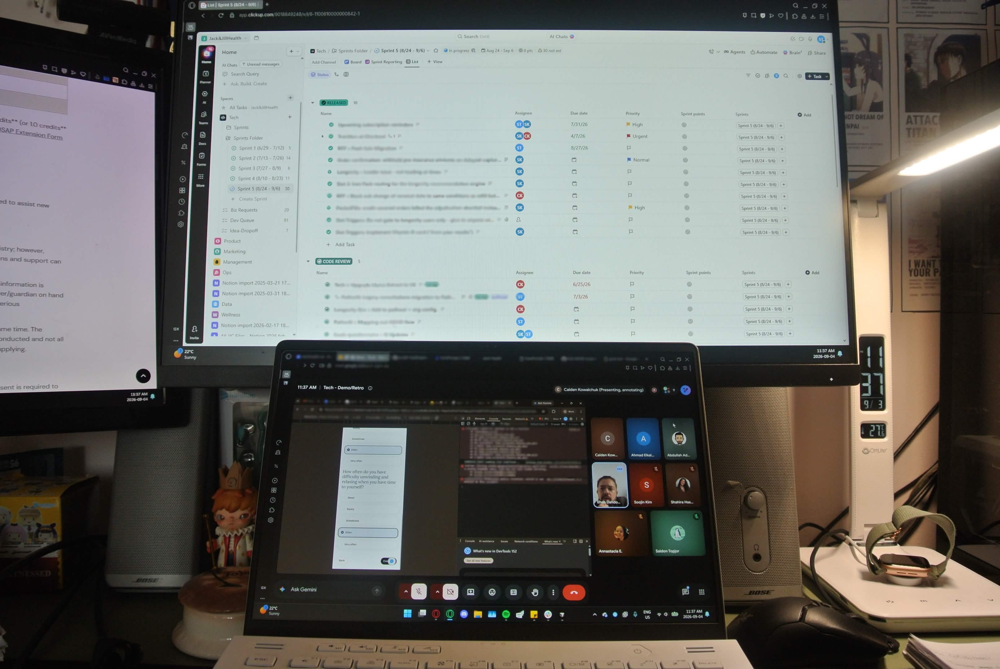
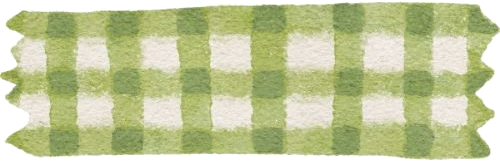
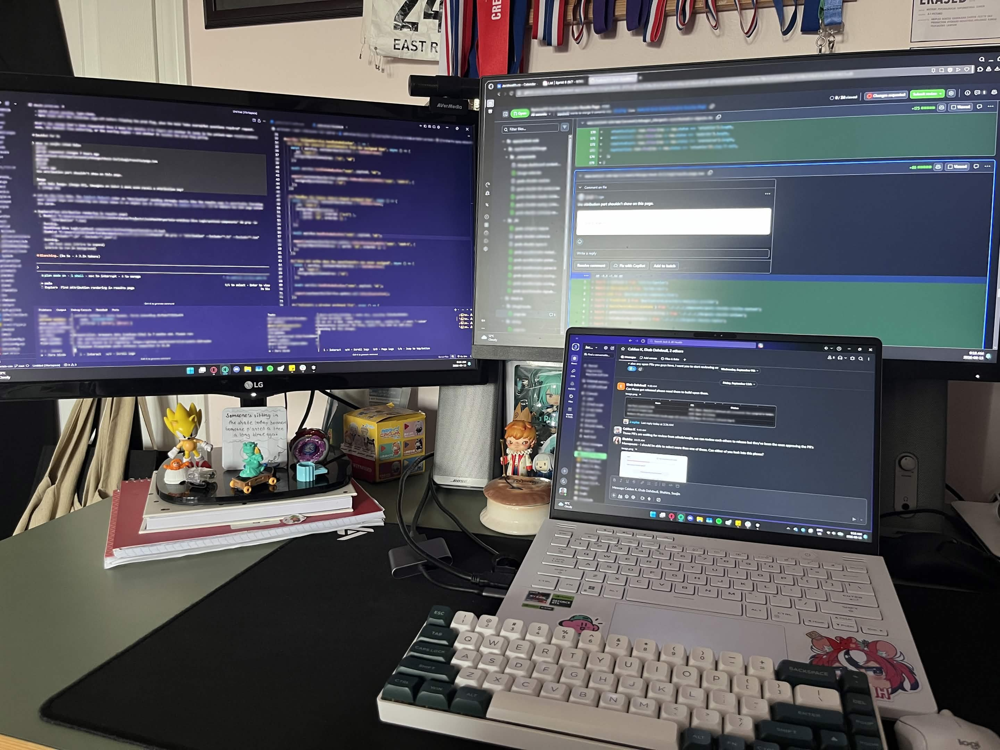
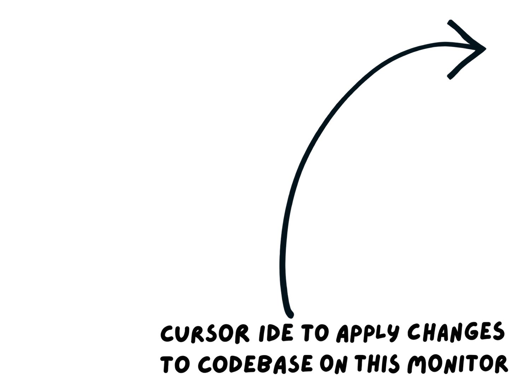
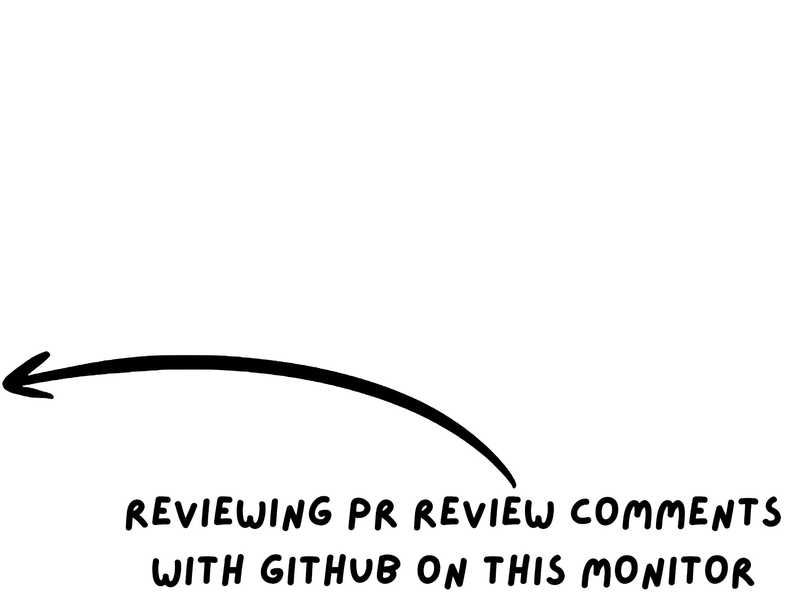
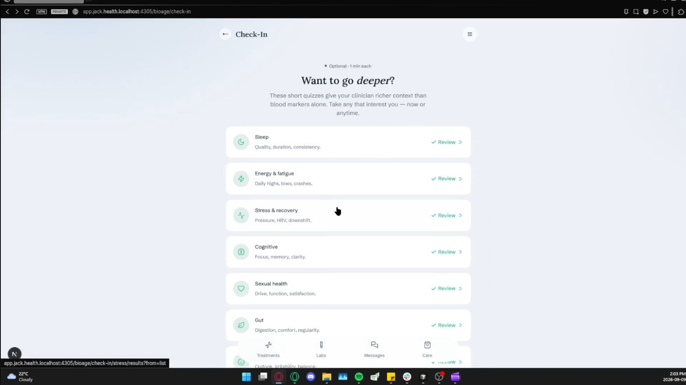
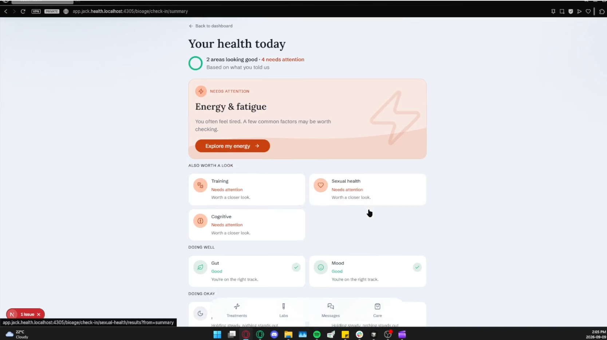
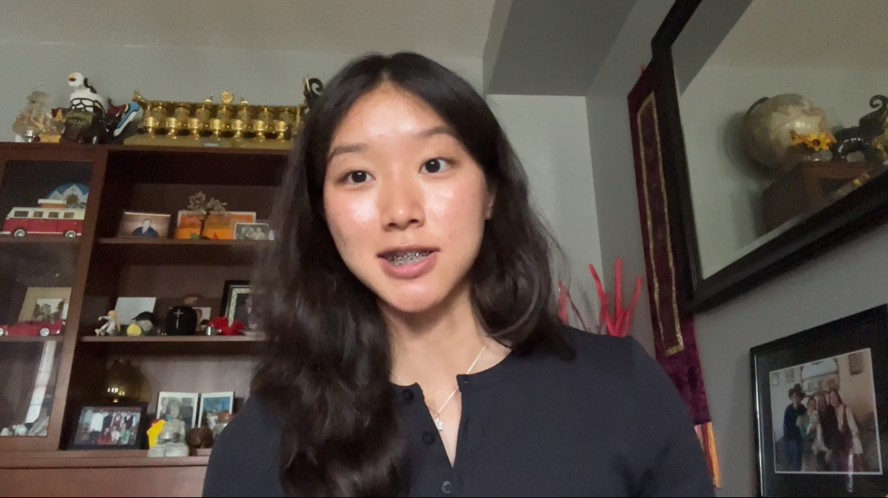

click on me!
click on me!
click on me!
click on me!


Saldon's Summer 2026 Work Term Report! ⸜(*ˊᗜˋ*)⸝


saldon at her desk attending a meeting while catching up on her daily intake of fruits!
Jack & Jill Health is a Canadian digital health company operating in the telehealth space, structured around two focused offerings: Jack for men's health (conditions like hair loss and ED) and Jill for women's health (conditions like menopause and perimenopause). The company focuses on the use of software engineering and clinical medicine, building the systems that let a small in-house medical team deliver personalized, condition-specific care to a much larger patient base than a traditional clinic could reach on its own. This split-brand structure is also what made the BioAge questionnaire work land the way it did, since the scoring engine had to branch cleanly by gender to serve both sides of the platform with clinically appropriate instruments.
Going into this term I set three main goals: getting better at managing multiple concurrent tasks without letting deadlines slip, strengthening how I collaborate on shared codebases, and pushing my technical skills (AI-driven automation, MongoDB, product analytics) past what coursework alone had covered.


My top monitor has ClickUp on it with different tasks set as Released, Code Review, Work in Progress, etc.
(I'm also in a meeting...)
Teamwork sharpened mostly through unplanned moments rather than the ones I'd wrote in my action plan. Coordinating a four day deadline release between the marketing team and technical leads taught me more about proactive communication than any of the code reviews did, mainly because there was no time to fix a misunderstanding after the fact.
Technically, this is where the term exceeded what I'd planned for. I got comfortable working with AI-assisted automation workflows, learning how to use it effectively without sacrificing product quality, at one point building a flash sale page from scratch that handled multiple product IDs, pulled live data from our CRM, and matched exactly what my team leads expected. With PostHog, I combined it with the same AI-assisted workflow to surface analytics on our patient app, work that meant collaborating not just with the tech team but with marketing too, to figure out what was working, what wasn't, and what needed to be built next. MongoDB ran through nearly everything I touched, from CRM to EMR data fetches, handling patient information carefully and appropriately, and updating EMR and CRM functionality to improve the experience for the medical, marketing, and tech teams alike.



My role centered on two projects that, together, capture most of what the term was about, and both demanded real depth in the codebase itself, not just surface-level changes.
The larger of the two was rebuilding the patient health questionnaire system from a homegrown scoring scheme into one based on nine validated clinical instruments (covering sleep, stress, mood, cognition, and several other health domains). The task arrived looking like a routine content update; it turned into a full-stack rebuild touching the questionnaire flow, a scoring engine made from scratch, and a new results page that, for the first time, actually showed patients an interpretation of their own answers. Configuring the scoring logic itself was substantial engineering work: translating validated clinical formulas into code that handled edge cases correctly, branched appropriately by instrument, and integrated cleanly with the rest of the codebase.
Alongside the coding itself, the harder problem was that the written scoring specification I was handed conflicted with the live product in several places. For example, question wording that no longer existed, answer options that had changed, or item numbers that didn't line up. Finding and resolving those mismatches before writing a line of scoring logic mattered as much as the logic itself because a scoring engine built against the wrong spec would have quietly returned wrong results to real patients. Since I couldn't test the full pipeline end-to-end against real patient accounts, I built confidence a different way. This was done by cross-checking every instrument's scoring boundaries against the published clinical guides, writing a full test suite to cover edge cases, and manually verifying results by hand against real staging data before calling it done.

This is one of the few pages i've made on the patient app that real patients see! It allows users to know themselves better through clinical flows.

This is another page I got to build! this is the patient facing results page that was built with my scoring scheme reflected through a simple UI screen for patients to see.
(These screenshots are from a demo video I presented to the CEO and all the company leads, and I'd be lying if I said I wasn't nervous)
By the end of the term, the questionnaire scoring engine was fully built, tested, and verified by hand against real data. More importantly, this system is already the foundation of other projects at Jack & Jill Health that are actively being built, specifically the work that will carry the platform further into a future of AI-powered, deeply personalized patient care. What started as a questionnaire update turned into infrastructure the rest of the product now depends on, and that's the kind of impact I hoped this term would have.
And so, if I had to summarize the term in one line, it would be that this co-op work term wasn't just a learning experience, it was a chance to build something that actually matters to Jack & Jill Health going forward. Coming in, I expected to spend the term picking up new skills and closing out tickets. I'm leaving having shipped a system the rest of the team is already building on top of, that real users are already interacting with, and I feel like that's a different kind of awesome accomplishment than just growing as a developer.
I'd like to thank the whole team at Jack & Jill Health for their guidance throughout the term. My supervisor, Soojin, was the first person I met on the tech team, who walked me through the codebases, got me more comfortable with GitHub, and was endlessly patient with my early mistakes. Her willingness to support me at any point during the term made a real difference in how quickly I was able to contribute, and I'm genuinely grateful to her! Thanks as well to Katie, my co-op coordinator, for her support throughout the co-op process and for letting me know this term could count as a summer co-op too. I'm looking forward to continue my growth as a Junior Developer at Jack & Jill Health for my next co-op term (F26). :]
Cheers!
- saldon :D

this is a screenshot from my interview video for this co-op, a little throw-back to end it off!